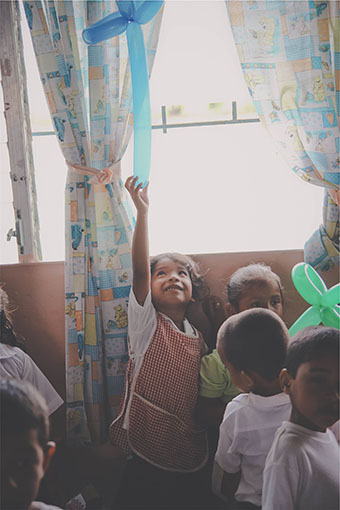

Agencies Contact information
This page contains links for Agencies and other information for Equity & Inclusion to support cultural needs, aboriginal & staff.
- Department of Immigration and Citizenship, Harmony Day
- Kidsmatter. Cultural diversity and children’s wellbeing.
- The United Convention on the Rights of a Child.
- Australian Bureau of Statistics (ABS) Deaths in Custody,2008.
- Australian Government: European Discovery and the colonisation of Australia.
- Closing the gap clearinghouse: Early Learning programs that promote children’s developmental and educational outcomes.
- Understanding cultural competence.